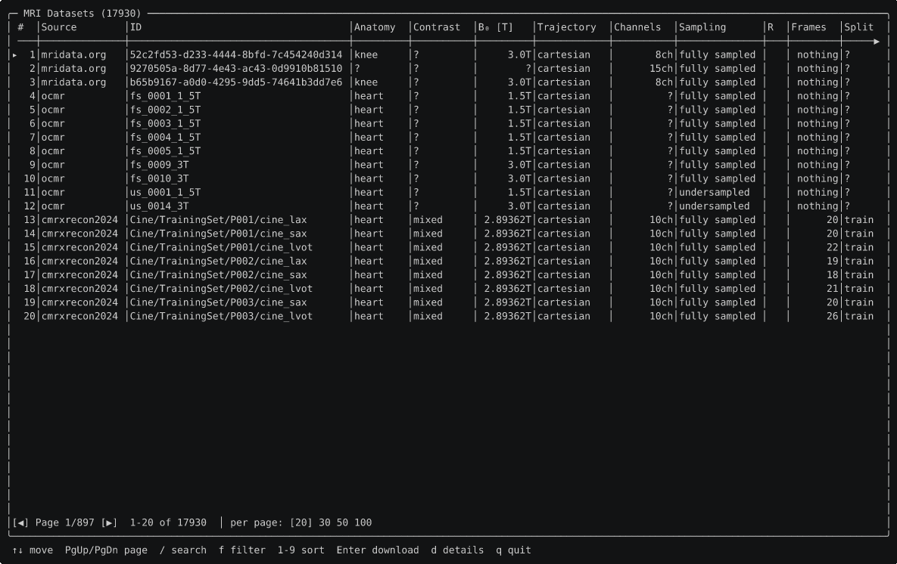
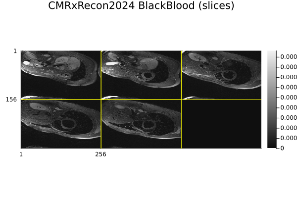
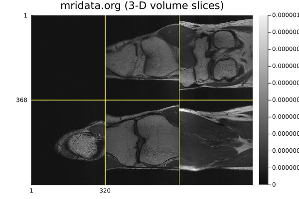
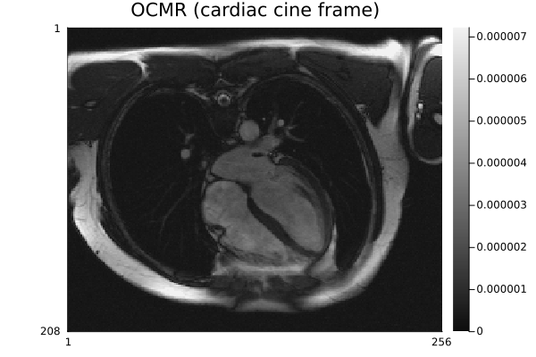
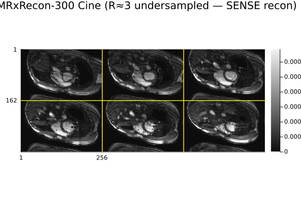

Usage
New to raw k-space, ISMRMRD or the catalog vocabulary? Read Concepts & data model first, then the Tutorial for an end-to-end walk-through. This page is the reference for every user-facing feature. Archive-fetching mechanics and maintainer scripts are in Internals & maintainer notes.
MRITestData downloads files from external repositories. Each source has its own terms you must agree to before using the data in your work — see Licensing & legal for the full list and citations. Call MRITestData.dismiss_terms_notice!() to suppress the startup reminder once you have reviewed them.
Discovering datasets
Two entry points:
| Function | Scope | Matches on |
|---|---|---|
list_datasets(source; filters...) | one source | core DatasetEntry fields |
query(; sources = …, filters...) | one or several sources (all by default) | core fields + extra keys + text free-text search |
using MRITestData
list_sources() # every supported source
list_datasets(OCMR_SOURCE; fully_sampled = true)
list_datasets(MRIDATA; anatomy = :knee, field_strength = 3.0)Filters
A filter matches a DatasetEntry field by a scalar (==), a vector/tuple (membership), or a predicate function:
list_datasets(MRIDATA; receiver_channels = c -> c !== nothing && c >= 8)
list_datasets(OCMR_SOURCE; field_strength = (1.5, 3.0))Field names, value vocabularies and units follow the DICOM standard wherever DICOM has an attribute for the concept (anatomy is Body Part Examined, contrast is Acquisition Contrast, …); seven fields with no DICOM equivalent are documented extensions. See Taxonomy.
Many fields are optional, and nothing is their honest value when a source records none. nothing is therefore a value to match, not a wildcard — use it to find entries where something is unknown. To not filter on a field, omit the keyword or pass missing:
list_datasets(FASTMRI; receiver_channels = nothing) # channel count not recorded
list_datasets(OCMR_SOURCE; fully_sampled = nothing) # sampling status unknown
list_datasets(MRIDATA; vendor = missing) # no filter — same as omitting itSearching across sources
query searches one or several sources at once with the same filter vocabulary. Unknown keywords are matched against each entry's extra metadata, and text does a case-insensitive substring (or Regex/predicate) search over the name, id, and string-valued extra fields:
query(; anatomy = :knee, fully_sampled = true) # every source
query(; sources = OCMR_SOURCE, field_strength = (1.5, 3.0))
query(; text = "prisma") # free-text
query(; cohort = :patient) # patients, not volunteers
query(; sources = OCMR_SOURCE, scanner_model = "Siemens MAGNETOM Sola") # an OCMR `extra` fieldThe missing/nothing distinction applies to extra keys too: a key the entry does not carry reads as nothing. Use extra_schema(source) to see which keys a source carries.
String queries
query also has a string-expression form for compound conditions that don't fit one flat keyword filter — the same language the browser's s search overlay uses:
query("dataset=fastmri AND R<3")
query("id='fs_*'")
query("(anatomy=knee AND R<3) OR fully_sampled=true")
query("dataset=ocmr AND size < 100M")
query("R != nothing") # only entries with a known accelerationor_expr := and_expr (OR and_expr)*
and_expr := atom (AND atom)*
atom := '(' or_expr ')' | field OP value
OP := '=' | '!=' | '<' | '<=' | '>' | '>='AND/OR are case-insensitive keywords and AND binds tighter than OR; parenthesize to override. A value is a bare word, a 'single'/"double"-quoted string, a number, or the bare word nothing (also null/missing/none) meaning "no value" — R = nothing finds entries without an acceleration, R != nothing the ones with. Numbers take a size suffix K/M/G (1000-based) or Ki/Mi/Gi (1024-based) with an optional trailing B (size < 100M); a lone trailing T is ignored, so b0=3T reads as 3. A string containing * is a case-insensitive glob (* matches any run of characters, anchored to the whole value); without * it's an exact case-insensitive compare. </<=/>/>= compare numerically and never match a non-numeric or missing field.
field accepts any DatasetEntry field name, a friendly alias matching the browser's column headers (dataset/source, r/accel → acceleration, b0 → field_strength, channels → receiver_channels, frames → num_frames, size → approx_size_bytes, sampling → the fully-sampled/pattern value the browser displays), or a per-source extra key — all case-insensitive. strict = true errors on an unknown field instead of @warning and matching nothing, same as the keyword form.
Interactive browser

MRITestData ships a full-screen terminal browser built on Tachikoma.jl's PagedDataTable. Call it from the Julia REPL:
using MRITestData
run_browser() # browse all sources
run_browser(; sources = OCMR_SOURCE) # one source only
run_browser(; offline = true) # skip the networkInside the browser:
- ↑ ↓ — move the selection; PgUp/PgDn, Home/End — change page.
s(or/) — open the search / expression-query overlay (see String queries); Enter applies, Esc cancels.f— open the filter modal (per-column typed filters). On its column list,pcycles the highlighted column's missing-value filter (none → present → missing → none) andxclears every active filter (per-column, missing-value, and the expression query).c— open the column-visibility picker: Space toggles the highlighted column, Enter applies, Esc cancels."#"(the row index) is always shown. The applied selection is persisted inLocalPreferences.tomland restored on the next launch.1-9— sort by that column (toggles ascending/descending).d— open the details pane: akeyword │ value │ descriptiontable of everyextrakey the highlighted dataset carries (the keyword is also itsquery/list_datasetsfilter name; the description column wraps).Esc,d, orqcloses it (no download quit from the details pane).- Enter — select the highlighted dataset and start the download flow.
q/ Esc — quit without downloading.
Narrowing run_browser(; sources = ...) to a single source adds a couple of that source's most useful extra fields as real, sortable/filterable columns (e.g. OCMR gets a scanner_model column) — see run_browser for the full list; they're also toggleable from the column picker and queryable by their extra_schema key. After selecting a dataset you confirm the download (y/n) and choose a destination path (default <current directory>/<id>.h5). The browser downloads to the path you give regardless of whether a default download path is configured.
Standalone shell command
MRITestData can also be installed as a standalone mridata-browser command:
using Pkg
Pkg.Apps.add("MRITestData") # from the registry
Pkg.Apps.develop(path = "/path/to/MRITestData") # from a local cloneWith ~/.julia/bin on your PATH:
mridata-browser # browse every source
mridata-browser --offline # bundled index, no network
mridata-browser --source ocmr # one source (repeatable; names match `source_name`)The self-updating index
MRIDATA and OCMR_SOURCE are backed by an index fetched from upstream and cached in a scratchspace:
- OCMR — the authoritative
ocmr_data_attributes.csvfrom OCMR's S3 bucket. - mridata.org — scraped from
mridata.org/list(the site has no JSON API).
The index is downloaded on first use, then refreshed automatically once older than MRITestData.INDEX_TTL_DAYS (default 30 days). On any network failure the bundled index that ships with the package is used instead, so discovery always works offline. The other five sources ship a static committed index and behave identically online and offline (refresh_index is a no-op that reports the path).
refresh_index(OCMR_SOURCE) # force a refresh now
refresh_index() # every source
index_age_days(OCMR_SOURCE) # nothing if never fetched (bundled fallback in use)
list_datasets(OCMR_SOURCE; offline = true) # skip the network entirely
MRITestData.INDEX_TTL_DAYS[] = 7 # refresh weeklyDownloading and caching
Choosing where downloads go
Nothing is downloaded until you configure a destination once (persisted in LocalPreferences.toml):
MRITestData.set_download_path!("/data/mri") # download into this directory
MRITestData.set_download_path!(:cache) # …or the per-package Scratch cache
MRITestData.get_download_path() # current value (`nothing` until set)
MRITestData.unset_download_path!() # forget it — downloads refused againUntil then download_dataset, copy_dataset and an entry-based load_raw throw. Everything below the download path — the .part staging files, .meta.toml sidecars and the cached ISMRMRD conversions — lives under whichever location you pick.
entry = first(list_datasets(OCMR_SOURCE; fully_sampled = true))
path = download_dataset(entry) # -> configured location, returns the local pathDownloads stream to a temporary .part file and are renamed atomically on success, so an interrupted transfer never poisons the cache. A ProgressMeter bar is shown by default (progress = false to opt out). A max_bytes guard prevents accidentally pulling a very large file:
download_dataset(entry; progress = false, max_bytes = 2_000_000_000)Pass path for a one-off destination without changing the default (this also works before any default is configured):
download_dataset(entry; path = "/tmp/mri") # -> /tmp/mri/<id>.h5For archive-backed sources this fetches only the requested file's bytes via HTTP range requests — see Internals: random-access extraction and the disk-footprint reference.
Cache management:
cache_path(entry); is_cached(entry)
clear_cache() # all sources
clear_cache(; source = OCMR_SOURCE) # one sourcecopy_dataset ensures a file is available at a path of your choice, copying from the cache without an HTTP request when it is already present and unmodified:
copy_dataset(entry; dest = "/data/my_scan.h5")Loading the raw data
load_raw accepts an ISMRMRD file path or a DatasetEntry/DatasetHandle directly (downloaded and cached on first use) and always returns a RawAcquisitionData:
raw = load_raw(entry) # profiles + parsed XML headerSee What load_raw returns for the structure and the axis conventions. This works uniformly for every source: ISMRMRD sources load directly; .mat and fastMRI-layout sources are converted to a cached ISMRMRD file transparently.
Per-source notes
| Source | Native format | On load | Reconstruct with |
|---|---|---|---|
MRIDATA | ISMRMRD .h5 | direct | direct FFT |
OCMR_SOURCE | ISMRMRD .h5 | direct | direct FFT (fs_*) / CG-SENSE (us_*) |
CMRXRECON2024 | MATLAB v7.3 .mat | → cached Cartesian ISMRMRD | direct FFT (fully sampled) |
CMRXRECON300 | MATLAB v7.3 .mat (Recon_ks + Calib) | → cached ISMRMRD, marked undersampled, ACS lines included | CG-SENSE with the ACS |
USC_SPEECH | MRD/ISMRMRD .h5 (spiral + trajectory + DCF) | direct, non-Cartesian | non-Cartesian (NUFFT + DCF) |
M4RAW | fastMRI HDF5 | → cached Cartesian ISMRMRD (all-true mask) | direct FFT |
FASTMRI | fastMRI HDF5 | → cached ISMRMRD; train/val fully sampled, test masked | direct FFT / CG-SENSE (test, prostate, breast) |
- CMRxRecon coils. CMRxRecon2024 is SVD-compressed to 10 virtual channels (
entry.coil_data == :derived; physical count inentry.extra["multi_coil_elements"]). CMRxRecon-300 keeps its 30 physical channels. - CMRxRecon FOV. Not shipped upstream; a placeholder (matrix size in mm) is written while the encoding/recon matrix reflects the true dimensions.
- CMRxRecon raw arrays.
MRITestData.load_mat(entry)returns the.matcontents as aDict(e.g.d["kspace_full"]) if you want to bypass the ISMRMRD conversion. - CMRxRecon data types. The six CMRxRecon2024 series (Cine, Mapping, Tagging, Aorta, Flow2d, BlackBlood) and the CMRxRecon-300 series (Cine SAX/LAX, T1/T2 map) are decomposed onto
contrast/orientation/sequence/quantitative/cardiac_sync/… — see Dataset contents for the full per-series table and filter examples.
fastMRI: form-gated credentials
Access is form-gated. Fill the request form at fastmri.med.nyu.edu; the confirmation email contains AWS S3 pre-signed URLs (one per anatomy + coil type + split), valid 90 days. Register them all at once with set_fastmri_urls! — pass the whole email body or just the curl block:
using MRITestData
MRITestData.set_fastmri_urls!(read("fastmri_email.txt", String))
MRITestData.fastmri_url_expires() # DateTime UTC, or nothing if not stored
# After the offset map is committed (maintainer task), use the standard API:
entries = list_datasets(FASTMRI; offline = true, anatomy = :knee)
raw = load_raw(first(entries))Until a populated data/fastmri_map.csv is committed, list_datasets(FASTMRI) is empty even with valid URLs — building it is a maintainer task (Internals & maintainer notes). When credentials expire, request new links and call set_fastmri_urls! again.
Reconstruction with MRIReco
MRITestData yields a RawAcquisitionData and stops there. Reconstruction is left to a dedicated package such as MRIReco.jl: convert to an AcquisitionData and reconstruct.
Fully-sampled data → direct reconstruction
using MRITestData, MRIReco
entry = first(list_datasets(OCMR_SOURCE; fully_sampled = true))
raw = load_raw(entry)
acq = AcquisitionData(raw) # re-exported by MRIReco
params = MRIReco.defaultRecoParams()
params[:reco] = "direct"
img = MRIReco.reconstruction(acq, params) # AxisArray [x, y, z, echo, coil, rep]echo carries the temporal/parametric axis (cine frames, mapping weightings). Combine coils with a root-sum-of-squares over the coil axis.
Reconstructing undersampled data
OCMR us_* files, all of CMRXRECON300, and fastMRI test/prostate/breast are undersampled — a direct recon aliases. Use CG-SENSE ("multiCoil") with coil sensitivity maps estimated by ESPIRiT from the calibration region:
using MRITestData, MRIReco, MRICoilSensitivities
using MRIReco: flag_is_set, flag_remove!
entry = first(list_datasets(CMRXRECON300; offline = true)) # R ≈ 3, ships ACS
raw = load_raw(entry)
acq = AcquisitionData(raw)
params = MRIReco.defaultRecoParams()
params[:reco] = "multiCoil"
# The ACS lines are in the same file, flagged ACQ_IS_PARALLEL_CALIBRATION.
# AcquisitionData drops them from the imaging data; rebuild a calibration-only
# acquisition (flag cleared) to estimate the sensitivity maps. Fall back to
# self-calibration from the imaging data when no ACS lines are present.
calib = [p for p in raw.profiles if flag_is_set(p, "ACQ_IS_PARALLEL_CALIBRATION")]
if !isempty(calib)
clean = deepcopy(calib)
foreach(p -> flag_remove!(p, "ACQ_IS_PARALLEL_CALIBRATION"), clean)
acq_calib = AcquisitionData(RawAcquisitionData(raw.params, clean))
params[:senseMaps] = espirit(acq_calib, (6, 6), 24; eigThresh_1 = 0.02, eigThresh_2 = 0.95)
else
params[:senseMaps] = espirit(acq, (6, 6), 24; eigThresh_1 = 0.02, eigThresh_2 = 0.95)
end
img = MRIReco.reconstruction(acq, params) # de-aliased, coil-combined (channel axis = 1)For compressed-sensing regularised variants ("multiCoilCS", TV / wavelet priors), see the MRIReco.jl documentation.
Method references
- SENSE — Pruessmann KP, Weiger M, Scheidegger MB, Boesiger P. SENSE: Sensitivity encoding for fast MRI. Magn Reson Med, 1999, 42(5): 952–962.
- CG-SENSE (non-Cartesian, iterative) — Pruessmann KP, Weiger M, Börnert P, Boesiger P. Advances in sensitivity encoding with arbitrary k-space trajectories. Magn Reson Med, 2001, 46(4): 638–651.
- ESPIRiT — Uecker M, Lai P, Murphy MJ, et al. ESPIRiT — an eigenvalue approach to autocalibrating parallel MRI: Where SENSE meets GRAPPA. Magn Reson Med, 2014, 71(3): 990–1001.
- Compressed sensing MRI — Lustig M, Donoho D, Pauly JM. Sparse MRI: The application of compressed sensing for rapid MR imaging. Magn Reson Med, 2007, 58(6): 1182–1195.
- MRIReco.jl — Knopp T, Grosser M. MRIReco.jl: An MRI reconstruction framework written in Julia. Magn Reson Med, 2021, 86(3): 1633–1646.
- ISMRMRD format — Inati SJ, Naegele JD, Zwart NR, et al. ISMRM Raw Data format: A proposed standard for MRI raw datasets. Magn Reson Med, 2017, 77(1): 411–421.
Verified across every source
examples/reconstruct_all_types.jl reconstructs a representative sample of each source and modality and was verified to succeed on all of them:
| Source / modality | Example recon dimensions [x, y, z, echo, coil, rep] |
|---|---|
| CMRxRecon-300 Cine SAX | (512, 162, 6, 24, 30, 1) — 6 slices × 24 frames, 30 coils |
| CMRxRecon-300 Cine LAX | (448, 168, 19, 4, 30, 1) |
| CMRxRecon-300 T1 / T2 map | (512, 144, 5, 9, 30, 1) / (384, 116, 5, 3, 30, 1) — echo axis = weightings |
| CMRxRecon2024 Cine / Mapping | (416, 168, 1, 12, 10, 1) / (384, 116, 5, 3, 10, 1) — 10 virtual coils |
| CMRxRecon2024 Aorta / Tagging / Flow2d | (416, 168, 2, 12, 10, 1) / (448, 180, 3, 12, 10, 1) / (384, 144, 2, 12, 10, 1) |
| CMRxRecon2024 BlackBlood | (512, 156, 5, 1, 10, 1) — single contrast (no temporal axis) |
| mridata.org (3-D Cartesian) | (640, 368, 41, 1, 15, 1) — 41 slices, 15 coils |
| OCMR (cardiac cine) | (512, 208, 1, 1, 15, 1) |
Representative reconstructions
Coil-combined (sum-of-squares) magnitude images, produced by docs/generate_recon_images.jl (readout axis cropped to remove CMRxRecon's 2× oversampling). They are pre-rendered and committed because reconstruction needs MRIReco plus real data downloads (a Synapse token and several GB).
CMRxRecon2024 — BlackBlood (dark-blood anatomical slices, blood pool nulled):

mridata.org — slices through a fully-sampled 3-D Cartesian volume:

OCMR — a cardiac cine frame:

CMRxRecon-300 is k-t undersampled (here R ≈ 3), so the same direct recon shows the expected aliasing — the heart replicated along the phase-encode direction. load_raw records the true sampling pattern, so this is faithful; an artifact-free image needs CG-SENSE with the paired ACS _calib data (entry.locator["calib_path"]):

Persistent settings
Tunables persisted across sessions via LocalPreferences.toml:
# Download location (required before any download; see above)
MRITestData.set_download_path!(:cache) # or a directory path
MRITestData.get_download_path()
# Terms-of-use notice
MRITestData.dismiss_terms_notice!() # suppress startup warning (after reviewing terms)
MRITestData.enable_terms_notice!()
# Parallel download chunks (default 4; 1 disables) and the minimum size for chunking
MRITestData.set_chunk_size!(8)
MRITestData.set_min_file_size!(4 * 1024 * 1024)
# Dataset-index TTL in days (default 30)
MRITestData.set_refresh_period!(7)
# Synapse token (CMRxRecon2024 and CMRxRecon-300)
MRITestData.set_synapse_token!("your-synapse-pat")
# fastMRI signed URLs (paste the full email body or curl-command block)
MRITestData.set_fastmri_urls!(email_text)
MRITestData.fastmri_url_expires()See FAQ & troubleshooting for credential setup and common errors.